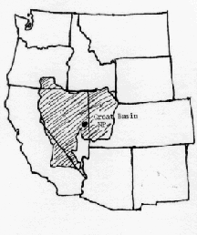

Albert Lowry High School
Winnemucca, Nevada
Here It is!!
Students at Albert Lowry High School sent in some fabulous artwork
of the ancient Bristlecone Pines in the Great Basin area of their state.
Their map below shows exactly where the Great Basin is located

Misse's poem is a beautiful tribute to these ancient trees and a fitting introduction to her classmate's art work:
As old as the wind and sand
that transformed the ancient Bristlecone
from tree,
to living art
Four thousand and six hundred
circles from the start
they grew on barren slopes
as mountains built themselves
beneath the mighty trees
unsure, reluctant terra
A millenarian of human error
a lonely Bristlecone
a tombstone for the past
more dead than alive
Still they survive
the thirst of drought
resting in the remoteness
of elevated bleakness
Senstitivity is not weakness
a sculpture of the past
Methuselah's lifeline still grows
A living memory of ancient times
A memory for the future
High school art teacher, Linda Murphy, who teaches studio art at Albert Lowry High School in Winnemucca, Nevada, describes her method for getting her students involved in
"A World Community of Old Trees":
" I called our National Forest Service Office and
requested their help with this project. Unfortunately, after speaking with my students
only three of them had visited the Great Basin National Park and had actually seen these
ancient trees."
"However, I saw this as an opportunity to introduce them to these wonderful,
natural sculptures. The USFS sent slides and an assortment of materials. I brought in books from the public library on this subject. Consequently, I have fifty students who
are better informed about the state they live in and one of the world's oldest living trees."
"This project has opened up the world of computers to me. I've run into many obstacles
and by so doing I have learned a great deal about the computer needs for my classroom, our school and community. Our local newspaper is doing an article about our
involvement with this project and the problems my students and I are facing."
Student Artists from Albert Lowry High School, Winnemucca, Nevada:
 Return to Main Page
Return to Main Page
June Julian jj68@nyu.edu